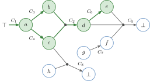
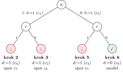
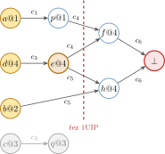
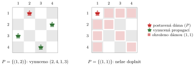
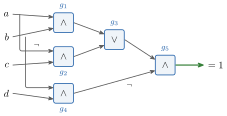
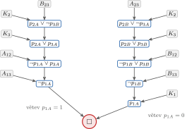
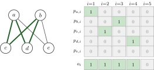

14.9 Úlohy navíc¶
Úlohy procvičují algoritmy a kódování z této kapitoly: unit propagation pro Hornovy formule (oddíl 14.1.2), DPLL a analýzu konfliktu v CDCL (oddíl 14.2), formát DIMACS (oddíl 14.6.5), kódování problémů do \(\href{../ch-cook/ch-cook-cook-levinova-veta.html#prob-sat}{\class{woo-pk-prob-sat}{\prob{SAT}}}\)u se stavebními bloky (oddíl 14.3 a cvičení 14.7) a Tseitinovu transformaci (oddíl 14.4). Pododdíl 14.9.4 přidává čtyři úlohy z cizí sbírky: kódování barvení, trojrozměrného párování, hamiltonovské kružnice a dlouhé kružnice do \(\href{../ch-cook/ch-cook-cook-levinova-veta.html#prob-sat}{\class{woo-pk-prob-sat}{\prob{SAT}}}\)u v podobě, jakou čeká zápočtový test.
Neoficiální úlohy
Úlohy v tomto oddílu nejsou oficiální zadání předmětu. Jsou to procvičovací úlohy navíc k látce kapitoly; každý běh algoritmu, každé kódování a každé číslo bylo ověřeno krátkým skriptem v Pythonu (simulace algoritmu, hrubá síla přes všechna ohodnocení, porovnání kódování s přímým řešením úlohy, kontrola rezolučního důkazu krok za krokem). Kódování v pododdílu 14.9.4 jsou porovnána s hrubou silou na všech grafech do 5 vrcholů (u trojrozměrného párování na všech, resp. náhodných instancích s \(q\le3\)) pomocí malého řešiče DPLL v Pythonu, včetně čtení řešení z modelu a počtů proměnných a klauzulí.
14.9.1 Rozcvička¶
Úloha 14.1 (Hornova formule a unit propagation)
- Které z klauzulí \((\lnot x\lor\lnot y\lor z)\), \((x\lor y)\), \((\lnot x\lor\lnot y\lor\lnot z)\), \((x)\), \((\lnot x\lor y\lor z)\), \((\lnot u)\) jsou Hornovy? U Hornových určete tvar (fakt, pravidlo, omezující).
- Spusťte algoritmus unit propagation pro Hornovy formule (algoritmus 14.1) na formuli \(\varphi=C_1\land\dots\land C_8\) s klauzulemi \(C_1=(a)\), \(C_2=(\lnot b\lor\lnot c\lor d)\), \(C_3=(\lnot a\lor b)\), \(C_4=(\lnot a\lor c)\), \(C_5=(\lnot d\lor\lnot e\lor\lnot f)\), \(C_6=(\lnot d\lor e)\), \(C_7=(\lnot g\lor f)\), \(C_8=(\lnot c\lor\lnot h)\). Klauzule procházejte opakovaně v pořadí \(C_1,\dots,C_8\). Je \(\varphi\) splnitelná?
- Pro které proměnné \(x\in\{a,\dots,h\}\) je formule \(\varphi\land(x)\) nesplnitelná? Zdůvodněte bez zkoušení všech ohodnocení.
Řešení
a) Hornovy klauzule. Klauzule je Hornova, má-li nejvýše jeden kladný literál.
| klauzule | kladných literálů | závěr |
|---|---|---|
| \((\lnot x\lor\lnot y\lor z)\) | 1 | Hornova, pravidlo \(x\land y\Rightarrow z\) |
| \((x\lor y)\) | 2 | není Hornova |
| \((\lnot x\lor\lnot y\lor\lnot z)\) | 0 | Hornova, omezující \(x\land y\land z\Rightarrow\bot\) |
| \((x)\) | 1 | Hornova, fakt \(\top\Rightarrow x\) |
| \((\lnot x\lor y\lor z)\) | 2 | není Hornova |
| \((\lnot u)\) | 0 | Hornova, omezující \(u\Rightarrow\bot\) |
b) Běh algoritmu. Všechny klauzule \(\varphi\) jsou Hornovy (každá má nejvýše jeden kladný literál), algoritmus tedy smíme použít. Jako implikace: \(C_1\): fakt \(a\); \(C_2\): \(b\land c\Rightarrow d\); \(C_3\): \(a\Rightarrow b\); \(C_4\): \(a\Rightarrow c\); \(C_5\): \(d\land e\land f\Rightarrow\bot\); \(C_6\): \(d\Rightarrow e\); \(C_7\): \(g\Rightarrow f\); \(C_8\): \(c\land h\Rightarrow\bot\). Začneme samými nulami a zvedáme jen vynucené proměnné:
| krok | průchod | \((a,b,c,d,e,f,g,h)\) | co se stalo |
|---|---|---|---|
| 0 | – | \((0,0,0,0,0,0,0,0)\) | start |
| 1 | 1 | \((1,0,0,0,0,0,0,0)\) | fakt \(C_1\): \(a:=1\) |
| 1 | \((1,0,0,0,0,0,0,0)\) | \(C_2\) nevystřelí, \(b=c=0\) | |
| 2 | 1 | \((1,1,0,0,0,0,0,0)\) | \(C_3\) (\(a\Rightarrow b\)): \(b:=1\) |
| 3 | 1 | \((1,1,1,0,0,0,0,0)\) | \(C_4\) (\(a\Rightarrow c\)): \(c:=1\) |
| 4 | 2 | \((1,1,1,1,0,0,0,0)\) | teď vystřelí \(C_2\) (\(b\land c\Rightarrow d\)): \(d:=1\) |
| 5 | 2 | \((1,1,1,1,1,0,0,0)\) | \(C_6\) (\(d\Rightarrow e\)): \(e:=1\) |
| 3 | \((1,1,1,1,1,0,0,0)\) | nic dalšího nevystřelí (\(C_7\) má \(g=0\)) – konec cyklu |
Kontrola omezujících klauzulí: \(C_5\) má předpoklady \(d=e=1\), ale \(f=0\) – platí; \(C_8\) má \(c=1\), ale \(h=0\) – platí. Algoritmus vrátí \(\tau=(1,1,1,1,1,0,0,0)\), formule je splnitelná. Dosazením: všech osm klauzulí je splněno.
Je to dokonce jediný model: podle věty 14.6 je \(a=\dots=e=1\) v každém modelu; pak \(C_5\) vynutí \(f=0\), \(C_7\) vynutí \(g=0\) a \(C_8\) (s \(c=1\)) vynutí \(h=0\). (Skriptem ověřeno přes všech \(2^8\) ohodnocení: model je jediný.)

Formule \(\varphi\) jako síť pravidel (stejné značení jako na obrázku 14.2): zeleně proměnné, které unit propagation zvedne na 1. Všimni si: do omezení \(C_5\) už vedou šipky ze dvou zelených proměnných (\(d\), \(e\)) – stačí zapálit \(f\) (přímo, nebo přes \(g\)) a omezení vystřelí. Do \(C_8\) vede šipka ze zelené \(c\), chybí jen \(h\).
c) Které fakty formuli zabijí. Označme \(M=(1,1,1,1,1,0,0,0)\) výsledek z bodu b). Algoritmus na \(\varphi\land(x)\) zvedne nejdřív totéž co na \(\varphi\) (všechna ta nastavení jsou vynucená i teď) a navíc \(x\) a vše, co z \(x\) plyne. Podle věty 14.6 je odpověď algoritmu správná.
- \(x\in\{a,b,c,d,e\}\): \(x\) je v \(M\) už 1, nic nového nevystřelí, \(M\) zůstane modelem – splnitelná.
- \(x=f\): \(d=e=f=1\) poruší \(C_5\) – nesplnitelná.
- \(x=g\): \(C_7\) zvedne \(f:=1\) a opět je porušena \(C_5\) – nesplnitelná.
- \(x=h\): \(c=h=1\) poruší \(C_8\) – nesplnitelná.
Odpověď: \(x\in\{f,g,h\}\), tedy přesně proměnné, které jsou v jediném modelu rovny 0. (Všech osm formulí \(\varphi\land(x)\) ověřeno skriptem algoritmem i hrubou silou.)
Úloha 14.2 (DIMACS: čtení, kontrola a blokující klauzule)
Je dán soubor ve formátu DIMACS:
c ukazka
p cnf 4 5
1 -2 0
2 3 0
-1 -3 4 0
-4 -2 0
-3 -4 0
2 -4 1 0- Zapište formuli v proměnných \(x_1,\dots,x_4\). Je hlavička v pořádku?
- Kolega tvrdí, že mu řešič vypsal
v 1 -2 3 -4 0. Může to být model? - Řešič ve skutečnosti vypsal
s SATISFIABLEav -1 -2 3 -4 0. Ověřte, že je to model, a napište v DIMACS klauzuli, která zakáže právě tento model. K čemu se taková klauzule hodí? - Kolik modelů formule má? Co vypíše řešič, když k ní přidáme klauzuli z bodu c)?
Řešení
a) Formule. Každý řádek je klauzule, kladné číslo \(i\) je \(x_i\), záporné \(-i\) je \(\lnot x_i\), nula ukončuje klauzuli:
Hlavička p cnf 4 5 tvrdí 4 proměnné (správně, nejvyšší číslo je 4) a 5 klauzulí – v souboru je ale klauzulí šest. Správně je p cnf 4 6. (Podle implementace řešič takový soubor odmítne jako chybný, nebo jen vypíše varování – na nesoulad hlavičky s obsahem se spoléhat nedá.)
b) Ohodnocení \((1,0,1,0)\). V klauzuli \(K_3=(\lnot x_1\lor\lnot x_3\lor x_4)\) dostaneme \(0\lor0\lor0\) – je nepravdivá. Model to není; řešič, který vypíše s SATISFIABLE, takový řádek v vypsat nemůže.
c) Ohodnocení \((0,0,1,0)\). Dosadíme do všech klauzulí: \(K_1=(1\lor1)\), \(K_2=(0\lor1)\), \(K_3=(1\lor0\lor0)\), \(K_4=(1\lor1)\), \(K_5=(0\lor1)\), \(K_6=(0\lor1\lor0)\) – všechny pravdivé, je to model.
Blokující klauzule zneguje každý literál modelu: z -1 -2 3 -4 vznikne 1 2 -3 4 0, tedy \((x_1\lor x_2\lor\lnot x_3\lor x_4)\). Je nepravdivá jen v ohodnocení \((0,0,1,0)\) (všechny její literály musí být nepravdivé), takže z modelů zahodí právě tento jeden. Hlavička se změní na p cnf 4 7. Použití: řešič hledá jen jeden model; přidáním blokující klauzule a novým spuštěním zjistíme, zda existuje jiný model (ověření jednoznačnosti, výčet všech modelů) (nad rámec přednášky).
d) Počet modelů. Rozdělíme podle \(x_2\) a dosadíme (je to přesně unit propagation):
- \(x_2=1\): \(K_4\) dá \(x_4=0\), \(K_1\) dá \(x_1=1\), pak \(K_3=(\lnot x_1\lor\lnot x_3\lor x_4)\) dá \(x_3=0\). Zbylé \(K_2\), \(K_5\), \(K_6\) jsou splněny. Model \((1,1,0,0)\).
- \(x_2=0\): \(K_2\) dá \(x_3=1\), \(K_5\) dá \(x_4=0\), \(K_3\) dá \(x_1=0\). \(K_1\) (obsahuje \(\lnot x_2\)) a \(K_6\) (obsahuje \(\lnot x_4\)) jsou splněny. Model \((0,0,1,0)\).
V každé větvi je všechno vynucené, takže modely jsou právě dva. Po přidání blokující klauzule zbude jediný: řešič vypíše s SATISFIABLE a v 1 2 -3 -4 0. Zablokujeme-li i ten (-1 -2 3 4 0), odpoví s UNSATISFIABLE. (Ověřeno skriptem: načtení souboru, počet klauzulí, oba modely.)
Úloha 14.3 (DPLL krok za krokem)
Spusťte DPLL (algoritmus 14.2) na formuli s klauzulemi \(c_1=(\lnot a\lor b)\), \(c_2=(\lnot a\lor c\lor d)\), \(c_3=(a\lor b\lor\lnot d)\), \(c_4=(\lnot c\lor d)\), \(c_5=(a\lor b)\), \(c_6=(\lnot d\lor c)\), \(c_7=(\lnot b\lor\lnot c\lor\lnot d)\). Větvěte vždy na první nepřiřazené proměnné v pořadí \(a,b,c,d\), nejdřív hodnotou 1.
- Zapište průběh do tabulky (rozhodnutí, unit propagation, konflikt) a nakreslete strom prohledávání.
- Proč DPLL nikdy nevětví na proměnné \(b\)?
- Ověřte nalezený model a dokažte, že je jediný.
Řešení
a) Průběh. Na začátku nemá žádná klauzule jediný literál, unit propagation nic neudělá a větvíme na \(a\).
| krok | rozhodnutí | unit propagation | výsledek |
|---|---|---|---|
| 1 | \(a=1\) | \(c_1=(\lnot a\lor b)\): \(b=1\) | nic dalšího; \(b\) přiřazeno, větvíme na \(c\) |
| 2 | \(a=1,\ c=1\) | \(c_4=(\lnot c\lor d)\): \(d=1\) | \(c_7=(\lnot b\lor\lnot c\lor\lnot d)\) konflikt \(\Rightarrow\) zkus \(c=0\) |
| 3 | \(a=1,\ c=0\) | \(c_2=(\lnot a\lor c\lor d)\): \(d=1\) | \(c_6=(\lnot d\lor c)\) konflikt \(\Rightarrow\) zpět, zkus \(a=0\) |
| 4 | \(a=0\) | \(c_5=(a\lor b)\): \(b=1\) | nic dalšího; větvíme na \(c\) |
| 5 | \(a=0,\ c=1\) | \(c_4\): \(d=1\) | \(c_7\) konflikt \(\Rightarrow\) zkus \(c=0\) |
| 6 | \(a=0,\ c=0\) | \(c_6=(\lnot d\lor c)\): \(d=0\) | všechny klauzule splněny – model |

Strom prohledávání (hrana = rozhodnutí, u ní propagace; u listů propagace a porušená klauzule). Všimni si: strom má jen 4 listy, i když ohodnocení je \(2^4=16\) – unit propagation pokaždé přiřadí \(b\) a \(d\) sama.
b) Proč se nevětví na \(b\). Po rozhodnutí o \(a\) je \(b\) vždy vynucené: při \(a=1\) klauzulí \(c_1=(\lnot a\lor b)\), při \(a=0\) klauzulí \(c_5=(a\lor b)\). Když DPLL hledá další proměnnou k větvení, \(b\) už přiřazené je, takže přeskočí na \(c\). Podobně \(d\) vždy vynutí \(c_4\), \(c_2\) nebo \(c_6\).
c) Model a jednoznačnost. Model \(a=0\), \(b=1\), \(c=0\), \(d=0\): \(c_1,c_2\) obsahují \(\lnot a\), \(c_3,c_5\) obsahují \(b\), \(c_4,c_7\) obsahují \(\lnot c\), \(c_6\) obsahuje \(\lnot d\) – vše splněno. Jednoznačnost: \(c_4\) a \(c_6\) dohromady říkají \(c\Leftrightarrow d\).
- \(c=d=1\): \(c_7\) vynutí \(b=0\), \(c_5\) pak \(a=1\) a \(c_1\) dá \(b=1\) – spor.
- \(c=d=0\): \(c_2\) vynutí \(a=0\) a \(c_5\) pak \(b=1\) – jediná možnost.
(Průběh i jednoznačnost modelu ověřeny skriptem s implementací DPLL a hrubou silou přes 16 ohodnocení.)
14.9.2 Na úrovni testu¶
Úloha 14.4 (Analýza konfliktu v CDCL)
Formule má klauzule \(c_1=(\lnot a\lor p)\), \(c_2=(\lnot c\lor q)\), \(c_3=(\lnot d\lor e)\), \(c_4=(\lnot e\lor\lnot p\lor f)\), \(c_5=(\lnot e\lor\lnot b\lor h)\), \(c_6=(\lnot f\lor\lnot h)\), \(c_7=(\lnot p\lor d\lor g)\). CDCL řešič postupně rozhodne \(a=1\), \(b=1\), \(c=1\), \(d=1\) (úrovně 1 až 4) a po každém rozhodnutí provede unit propagation (klauzule v pořadí \(c_1,\dots,c_7\)).
- Zapište trail se značením \(x@k\) a nakreslete implikační graf v okamžiku konfliktu.
- Proveďte analýzu konfliktu (postup Analýza konfliktu (1UIP)): kterou klauzuli se řešič naučí? Které vrcholy jsou UIP a který je první?
- Na kterou úroveň řešič skočí a co se tam propaguje?
- Kdybychom rezolvovali až k samotným rozhodnutím, jakou klauzuli bychom dostali? Proč jsou obě naučené klauzule důsledkem formule?
Řešení
a) Trail.
| úroveň | rozhodnutí | propagace | poznámka |
|---|---|---|---|
| 1 | \(a=1\) | \(c_1\): \(p=1\) | \(c_7=(\lnot p\lor d\lor g)\) má ještě dva volné literály |
| 2 | \(b=1\) | – | \(c_5\) čeká na \(e\) |
| 3 | \(c=1\) | \(c_2\): \(q=1\) | s konfliktem nesouvisí |
| 4 | \(d=1\) | \(c_3\): \(e=1\); \(c_4\): \(f=1\); \(c_5\): \(h=1\) | \(c_6=(\lnot f\lor\lnot h)\): konflikt |
Trail: \(a@1,\ p@1,\ b@2,\ c@3,\ q@3,\ d@4,\ e@4,\ f@4,\ h@4\). Hrany implikačního grafu (podle definice 14.12): \(a\to p\) (\(c_1\)), \(c\to q\) (\(c_2\)), \(d\to e\) (\(c_3\)), \(e\to f\) a \(p\to f\) (\(c_4\)), \(e\to h\) a \(b\to h\) (\(c_5\)), \(f\to\bot\) a \(h\to\bot\) (\(c_6\)).

Implikační graf v okamžiku konfliktu (žlutě rozhodnutí, šedě úroveň 3, která s konfliktem nesouvisí, oranžově s tučným okrajem první UIP \(e@4\)). Všimni si: hrany přes čárkovaný řez vycházejí z \(p\), \(e\) a \(b\) – jejich negace jsou literály naučené klauzule.
b) Analýza konfliktu. Konfliktní úroveň je 4. Rezolvujeme pozpátku po trailu, dokud klauzule obsahuje víc než jeden literál z úrovně 4:
| klauzule | literály z úrovně 4 | krok |
|---|---|---|
| \(c_6=(\lnot f\lor\lnot h)\) | \(\lnot f,\ \lnot h\) | dva \(\Rightarrow\) rezolvuj podle \(h\) (přiřazen naposledy, vynutila ho \(c_5\)) |
| \(c_6\oplus c_5=(\lnot f\lor\lnot e\lor\lnot b)\) | \(\lnot f,\ \lnot e\) | dva \(\Rightarrow\) rezolvuj podle \(f\) (vynutila ho \(c_4\)) |
| \(\oplus\,c_4=(\lnot e\lor\lnot b\lor\lnot p)\) | jen \(\lnot e\) | stop: naučíme \((\lnot e\lor\lnot b\lor\lnot p)\) |
UIP je vrchol úrovně 4, přes který vedou všechny cesty od rozhodnutí \(d@4\) ke konfliktu. Cesty jsou dvě: \(d\to e\to f\to\bot\) a \(d\to e\to h\to\bot\). Obě procházejí jen přes \(d\) a \(e\) (\(f\) ani \(h\) na obou neleží), takže UIP jsou \(d\) a \(e\); první UIP (nejblíž konfliktu) je \(e@4\). Řez těsně za ním odpovídá naučené klauzuli: obsahuje negaci každého zdroje hrany přes řez (\(\lnot e\), \(\lnot b\), \(\lnot p\)).
c) Skok zpět. Literály naučené klauzule jsou z úrovní \(4\) (\(e\)), \(2\) (\(b\)) a \(1\) (\(p\)). Skáčeme na druhou nejvyšší, tedy na úroveň 2 – úrovně 3 a 4 zrušíme (zapomeneme \(c\), \(q\), \(d\), \(e\), \(f\), \(h\)) a rozhodnutí \(c\), které s konfliktem nesouvisí, přeskočíme. Na úrovni 2 platí \(a=p=b=1\) a naučená klauzule je jednotková:
vše na úrovni 2 a bez konfliktu. Řešič pak pokračuje dalším rozhodnutím. (Skript s rozhodnutími \(c=1\), \(f=1\) došel k modelu \(a=b=c=f=g=p=q=1\), \(d=e=h=0\).)
d) Klauzule z rozhodnutí. Rezolvujeme dál, dokud zůstávají propagované literály: \((\lnot e\lor\lnot b\lor\lnot p)\oplus c_3=(\lnot d\lor\lnot b\lor\lnot p)\) (podle \(e\)) a dále \(\oplus\,c_1=(\lnot d\lor\lnot b\lor\lnot a)\) (podle \(p\)). Tato klauzule jen zakazuje konkrétní kombinaci rozhodnutí \(a=b=d=1\); klauzule 1UIP říká obecnější věc: „\(e\), \(b\) a \(p\) nesmí platit zároveň“, ať se \(e\) a \(p\) dostanou na 1 jakkoli. Obě vznikly rezolucí z klauzulí formule a rezolventa platí v každém ohodnocení, které splňuje oba předpoklady – obě jsou tedy důsledkem formule a jejich přidání nezmění množinu modelů. (Ověřeno skriptem: simulace trailu a analýzy, výpočet UIP přes cesty grafu, a hrubou silou přes \(2^{10}\) ohodnocení, že obě klauzule z formule plynou.)
Úloha 14.5 (Doplnění dam jako SAT)
Problém \(\href{#un-14-5}{\class{woo-pk-pojem-queens-completion}{\prob{Queens Completion}}}\). Na šachovnici \(n\times n\) jsou na políčkách z množiny \(P\) už postavené dámy. Lze přidat další dámy tak, aby jich na šachovnici bylo celkem \(n\) a žádné dvě se neohrožovaly (nestály ve stejném řádku, sloupci ani na stejné diagonále)? Políčko je dvojice (řádek, sloupec) \((r,s)\), \(r,s\in\{1,\dots,n\}\). Vstup je šachovnice zapsaná jako tabulka \(n\times n\) (u každého políčka, zda na něm dáma stojí).
- Navrhněte kódování do \(\href{../ch-cook/ch-cook-cook-levinova-veta.html#prob-sat}{\class{woo-pk-prob-sat}{\prob{SAT}}}\)u: proměnné s významem, klauzule po skupinách, korektnost oběma směry, čtení řešení z modelu a počet proměnných a klauzulí v závislosti na \(n\) a \(|P|\).
- Pro \(n=4\) rozhodněte instance \(P=\{(1,2)\}\) a \(P=\{(1,1)\}\) – unit propagation a nejvýše jedním větvením.
Řešení
Redukce: \(\href{#un-14-5}{\class{woo-pk-pojem-queens-completion}{\prob{Queens Completion}}} \mathrel{\href{../ch-redukce/ch-redukce-jak-porovnat-slozitost-dvou-problemu.html#def-redukce}{\class{woo-pk-def-redukce}{\redp}}} \href{../ch-cook/ch-cook-cook-levinova-veta.html#prob-sat}{\class{woo-pk-prob-sat}{\prob{SAT}}}\), instance \((n,P)\) \(\mapsto\) formule \(\varphi_{n,P}\) v CNF.
Velikost vstupu. Instance je šachovnice \(n\times n\) s vyznačenými políčky, má tedy velikost \(\Theta(n^2)\); polynomiální v \(n\) znamená polynomiální ve vstupu.
Krok 1 – proměnné. \(q_{r,s}\) pro \(r,s\in\{1,\dots,n\}\): \(q_{r,s}=1\iff\) „na políčku \((r,s)\) stojí dáma“. Celkem \(n^2\) proměnných.
Krok 2 – omezení.
- Chceme: v každém řádku je aspoň jedna dáma. Blok alespoň jedna: \((q_{r,1}\lor\dots\lor q_{r,n})\) pro každé \(r\). (\(n\) klauzulí)
- Chceme: v řádku nejvýše jedna dáma. \(q_{r,s}\Rightarrow\lnot q_{r,t}\), blok nejvýše jedna: \((\lnot q_{r,s}\lor\lnot q_{r,t})\) pro každé \(r\) a \(s<t\). (\(n\binom n2\) klauzulí)
- Chceme: ve sloupci nejvýše jedna dáma: \((\lnot q_{r,s}\lor\lnot q_{t,s})\) pro každé \(s\) a \(r<t\). (\(n\binom n2\) klauzulí)
- Chceme: na diagonále nejvýše jedna dáma. Políčka \((r,s)\neq(t,u)\) leží na společné diagonále, právě když \(|r-t|=|s-u|\); pro každou takovou neuspořádanou dvojici klauzule \((\lnot q_{r,s}\lor\lnot q_{t,u})\).
- Chceme: postavené dámy zůstanou. Jednotková klauzule \((q_{r,s})\) pro každé \((r,s)\in P\). (\(|P|\) klauzulí)
„Celkem \(n\) dam“ zvlášť kódovat nemusíme: v \(n\) řádcích s nejvýše jednou dámou je dam \(n\), právě když je v každém řádku aspoň jedna – to je skupina 1.
Krok 3 – formule. \(\varphi_{n,P}\) = konjunkce skupin 1–5.
Krok 4 – korektnost.
- (\(\Rightarrow\)) Nechť \(Q\supseteq P\) je množina \(n\) neohrožujících se dam. Položíme \(q_{r,s}=1\iff(r,s)\in Q\). Žádné dvě dámy nejsou v jednom řádku, takže \(n\) dam obsadí každý z \(n\) řádků právě jednou – platí skupiny 1 a 2. Skupiny 3 a 4 platí, protože se dámy neohrožují, skupina 5, protože \(P\subseteq Q\).
- (\(\Leftarrow\)) V modelu vezmeme \(Q=\{(r,s): q_{r,s}=1\}\). Podle 1 a 2 je v každém řádku právě jedna dáma, takže \(|Q|=n\). Dvě různé dámy z \(Q\) nejsou ve stejném řádku (2), sloupci (3) ani na diagonále (4) – neohrožují se. Podle 5 je \(P\subseteq Q\). Tedy \(Q\) je hledané doplnění.
- Čtení řešení: dámy stojí na políčkách s \(q_{r,s}=1\); pro každý řádek \(r\) je to jediné \(s\).
- Stojí-li v \(P\) dvě dámy, které se ohrožují, je formule nesplnitelná automaticky (jednotkové klauzule a klauzule skupiny 2–4 si odporují) – správně, taková instance doplnění nemá.
Velikost. Skupina 4: diagonála jednoho směru (\(r-s\) konstantní) má délku \(L\in\{1,2,\dots,n-1,n,n-1,\dots,1\}\) a dává \(\binom L2\) dvojic, tedy \(2\sum_{L=1}^{n-1}\binom L2+\binom n2=2\binom n3+\binom n2=\frac{n(n-1)(2n-1)}{6}\); oba směry dávají dvojnásobek. Celkem
Pro \(n=4\): \(4+24+24+28=80\) klauzulí a \(|P|\) jednotkových. To je polynomiální ve velikosti vstupu \(\Theta(n^2)\).
b) Instance \(n=4\). Řádek \(r\) je shora, sloupec \(s\) zleva.
- \(P=\{(1,2)\}\): jednotková klauzule dá \(q_{1,2}=1\) a skupiny 2–4 vynulují políčka, která dáma ohrožuje: \((1,1),(1,3),(1,4)\), \((2,2),(3,2),(4,2)\), \((2,1),(2,3),(3,4)\). V řádku 2 zbude jen \((2,4)\), klauzule skupiny 1 se stane jednotkovou: \(q_{2,4}=1\). Ta vynuluje \((3,3)\) (diagonála) a \((4,4)\) (sloupec); v řádku 3 zbude \((3,1)\), tedy \(q_{3,1}=1\), a v řádku 4 zbude \((4,3)\), \(q_{4,3}=1\). Bez jediného větvení dostaneme model, dámy ve sloupcích \((2,4,1,3)\) – doplnění existuje a je jediné.
- \(P=\{(1,1)\}\): \(q_{1,1}=1\) vynuluje zbytek řádku 1, sloupce 1 a diagonálu \((2,2),(3,3),(4,4)\). V řádku 2 zbývají \((2,3)\) a \((2,4)\), větvíme. Při \(q_{2,3}=1\) jsou v řádku 3 všechna políčka ohrožena (\((3,1)\) sloupec dámy \((1,1)\), \((3,2)\) a \((3,4)\) diagonály dámy \((2,3)\), \((3,3)\) sloupec i diagonála) – klauzule řádku 3 je v konfliktu. Při \(q_{2,4}=1\) zbude v řádku 3 jen \((3,2)\), tedy \(q_{3,2}=1\), a v řádku 4 je pak vše ohroženo (\((4,1)\), \((4,2)\), \((4,4)\) sloupce, \((4,3)\) diagonála dámy \((3,2)\)) – konflikt. Formule je nesplnitelná, doplnění neexistuje.

Vlevo jediné doplnění pro \(P=\{(1,2)\}\), vpravo políčka ohrožená dámou \((1,1)\). Všimni si: vpravo zbývá v řádku 2 jen \((2,3)\) nebo \((2,4)\) a obě volby vedou ke konfliktu o řádek níž.
(Kódování porovnáno s hrubou silou přes všechny permutace pro \(n\le6\) a všechna \(P\) s nejvýše dvěma dámami, 1 189 instancí, z toho 234 kladných; počty klauzulí podle vzorce pro \(n\le6\); pro \(n=4\) výše ověřeny i počty modelů 1 a 0.) (nad rámec přednášky) Problém \(\href{#un-14-5}{\class{woo-pk-pojem-queens-completion}{\prob{Queens Completion}}}\) je NP-úplný (Gent, Jefferson, Nightingale 2017), zatímco prázdnou šachovnici (\(P=\emptyset\)) umíme pro \(n\ge4\) vyplnit přímou konstrukcí.
Úloha 14.6 (Tseitinova transformace konkrétní formule)
Je dána formule \(\varphi=\bigl((a\land b)\lor(\lnot a\land c)\bigr)\land\lnot(b\land d)\) („je-li \(a\), pak \(b\), jinak \(c\); a navíc ne zároveň \(b\) a \(d\)“).
- Zakreslete \(\varphi\) jako obvod, zaveďte proměnné hradel a napište Tseitinovu formuli \(\psi\). Kolik má proměnných a klauzulí?
- Spočítejte hodnoty hradel pro vstup \(a=0\), \(b=1\), \(c=1\), \(d=1\). Rozšiřuje se tento vstup na model \(\psi\)?
- Dokažte, že \(\psi\) je s \(\varphi\) ekvisplnitelná, a porovnejte počty modelů.
- Spolužák vynechal klauzuli \((g_4\lor\lnot b\lor\lnot d)\) s tím, že \(g_4\) stačí jen směr \(g_4\Rightarrow b\land d\). Ukažte, proč je to chyba.
Řešení
Převod: formule \(\varphi\) \(\mapsto\) ekvisplnitelná 3-CNF \(\psi\) (Tseitinova transformace, věta 14.22).
a) Hradla a klauzule. Každé hradlo AND/OR dostane novou proměnnou, negace je jen literál (žádná nová proměnná). Klauzule hradla jsou obě implikace, stejně jako v oddílu 14.4.2.
| hradlo | směr \(\Rightarrow\) | směr \(\Leftarrow\) |
|---|---|---|
| \(g_1\leftrightarrow(a\land b)\) | \((\lnot g_1\lor a)\), \((\lnot g_1\lor b)\) | \((g_1\lor\lnot a\lor\lnot b)\) |
| \(g_2\leftrightarrow(\lnot a\land c)\) | \((\lnot g_2\lor\lnot a)\), \((\lnot g_2\lor c)\) | \((g_2\lor a\lor\lnot c)\) |
| \(g_3\leftrightarrow(g_1\lor g_2)\) | \((\lnot g_3\lor g_1\lor g_2)\) | \((\lnot g_1\lor g_3)\), \((\lnot g_2\lor g_3)\) |
| \(g_4\leftrightarrow(b\land d)\) | \((\lnot g_4\lor b)\), \((\lnot g_4\lor d)\) | \((g_4\lor\lnot b\lor\lnot d)\) |
| \(g_5\leftrightarrow(g_3\land\lnot g_4)\) | \((\lnot g_5\lor g_3)\), \((\lnot g_5\lor\lnot g_4)\) | \((g_5\lor\lnot g_3\lor g_4)\) |
| výstup | \((g_5)\) |
\(\psi\) = konjunkce všech řádků. Velikost: \(4+5=9\) proměnných, \(5\cdot3+1=16\) klauzulí, každá s nejvýše 3 literály – je to 3-CNF.

Obvod formule \(\varphi\): pět hradel, dvě negace (u vstupu \(a\) do \(g_2\) a u \(g_4\) do \(g_5\)) jsou jen negované literály. Všimni si: hradlo \(g_4\) vstupuje do výstupu negovaně – to bude důležité v bodě d).
b) Vstup \((a,b,c,d)=(0,1,1,1)\). Zdola nahoru: \(g_1=0\land1=0\), \(g_2=1\land1=1\), \(g_3=0\lor1=1\), \(g_4=1\land1=1\), \(g_5=1\land\lnot1=0\). Klauzule hradel tyto hodnoty vynutí unit propagation (\((\lnot g_1\lor a)\) dá \(g_1=0\), \((g_2\lor a\lor\lnot c)\) dá \(g_2=1\), \((\lnot g_2\lor g_3)\) dá \(g_3=1\), \((g_4\lor\lnot b\lor\lnot d)\) dá \(g_4=1\), \((\lnot g_5\lor\lnot g_4)\) dá \(g_5=0\)) a výstupní klauzule \((g_5)\) je pak v konfliktu. Vstup se na model \(\psi\) nerozšíří – správně, protože \(\varphi(0,1,1,1)=0\) (\(b\land d\) platí).
c) Ekvisplnitelnost. Klauzule každého hradla jsou jeho pravdivostní tabulka: jsou splněny, právě když má proměnná hradla hodnotu, kterou hradlo ze svých vstupů spočítá (stejně jako v příkladu 14.20).
- (\(\Rightarrow\)) Je-li \(\varphi(a,b,c,d)=1\), spočítáme \(g_1,\dots,g_5\) zdola nahoru; všechny klauzule hradel platí a \(g_5=\varphi(a,b,c,d)=1\), takže platí i \((g_5)\) – máme model \(\psi\).
- (\(\Leftarrow\)) V modelu \(\psi\) je každá \(g_i\) rovna hodnotě svého hradla, tedy \(g_5=\varphi(a,b,c,d)\), a klauzule \((g_5)\) dává \(\varphi(a,b,c,d)=1\). Zúžení modelu na \(a,b,c,d\) je model \(\varphi\).
Každý vstup má navíc jediné rozšíření hradel, takže modely si odpovídají 1:1. \(\varphi\) má 5 modelů: pro \(a=1\) musí být \(b=1\), tedy \(d=0\) a \(c\) libovolné – \((1,1,0,0)\), \((1,1,1,0)\); pro \(a=0\) musí být \(c=1\) a \((b,d)\neq(1,1)\) – \((0,0,1,0)\), \((0,0,1,1)\), \((0,1,1,0)\). Stejně tak \(\psi\) má přesně 5 modelů.
d) Vynechaná klauzule. Bez \((g_4\lor\lnot b\lor\lnot d)\) zbudou pro \(g_4\) jen \((\lnot g_4\lor b)\), \((\lnot g_4\lor d)\), které hodnota \(g_4=0\) splní vždy. Výstup potřebuje \(\lnot g_4\), takže řešič může \(g_4=0\) zvolit i při \(b=d=1\). Pro vstup \((0,1,1,1)\) z bodu b) pak \(g_1=0\), \(g_2=g_3=1\), \(g_4=0\), \(g_5=1\) splňuje všech 15 zbylých klauzulí, ačkoli \(\varphi(0,1,1,1)=0\): řešič by vrátil „řešení“, které podmínku \(\lnot(b\land d)\) porušuje. Zkrácená formule má 8 modelů místo 5 (navíc vstupy \((0,1,1,1)\), \((1,1,0,1)\), \((1,1,1,1)\)). Přidáme-li k \(\varphi\) ještě \((b)\land(d)\), je \(\varphi\) nesplnitelná, ale zkrácená \(\psi\land(b)\land(d)\) splnitelná – rozbije se i ekvisplnitelnost. Hodnota \(g_4\) se totiž do výstupu dostává přes negaci; pro takové hradlo je nutný právě směr \(b\land d\Rightarrow g_4\).
Poznámka (nad rámec přednášky). U hradel, která se do výstupu dostanou jen kladně, by naopak vynechání směru \(\Leftarrow\) nevadilo (například klauzule \((g_1\lor\lnot a\lor\lnot b)\); skript to potvrdil) – to je tzv. Plaistedovo–Greenbaumovo kódování. Na papíře ale bezpečně pište obě implikace. Pro srovnání: roznásobením dostaneme \((a\lor c)\land(\lnot a\lor b)\land(b\lor c)\land(\lnot b\lor\lnot d)\) – pouhé 4 klauzule. U malé formule je Tseitin větší než přímá CNF; jeho výhoda je, že roste vždy lineárně (obrázek 14.15). (Vše ověřeno skriptem přes všech \(2^9\) ohodnocení: 16 klauzulí, 5 a 5 modelů, jediné rozšíření pro každý vstup, 8 modelů zkrácené formule, nejmenší ekvivalentní CNF \(\varphi\) má 3 klauzule.)
14.9.3 Těžší úlohy¶
Úloha 14.7 (Holubník: kódování a důkaz rezolucí)
Formule \(\mathrm{PHP}_n\) říká „\(n+1\) holubů lze rozmístit do \(n\) děr tak, že je každý holub v nějaké díře a v žádné díře nejsou dva“.
- Zapište \(\mathrm{PHP}_n\) jako CNF a spočítejte proměnné a klauzule v závislosti na \(n\). Potřebujeme klauzule „holub je nejvýše v jedné díře“?
- Pro \(n=2\) (holubi 1, 2, 3, díry \(A\), \(B\)) odvoďte rezolucí prázdnou klauzuli. Vysvětlete, proč to dokazuje nesplnitelnost.
- Jak důkaz souvisí s během DPLL?
Řešení
a) Kódování. Proměnné \(p_{i,h}\) pro holuba \(i\in\{1,\dots,n+1\}\) a díru \(h\in\{1,\dots,n\}\): \(p_{i,h}=1\iff\) „holub \(i\) sedí v díře \(h\)“.
- Každý holub v nějaké díře – blok alespoň jedna: \(K_i=(p_{i,1}\lor\dots\lor p_{i,n})\), \(n+1\) klauzulí.
- V žádné díře dva holubi – blok nejvýše jedna: \((\lnot p_{i,h}\lor\lnot p_{j,h})\) pro každou díru \(h\) a \(i<j\), celkem \(n\binom{n+1}2\) klauzulí.
Velikost: \(n(n+1)\) proměnných a \((n+1)+n\binom{n+1}{2}=(n+1)+\frac{n^2(n+1)}{2}\) klauzulí; pro \(n=2\): 6 proměnných a \(3+6=9\) klauzulí. Klauzule „nejvýše jedna díra pro holuba“ nepotřebujeme: sedí-li holub v modelu ve více dírách, necháme ho jen v jedné z nich – žádná díra tím druhého holuba nezíská. Formule s nimi i bez nich jsou tedy ekvisplnitelné (stejná úvaha jako u Schurova problému v oddílu 14.6.3). Navíc je formule bez nich slabší (každý model formule s nimi je i jejím modelem), takže nesplnitelnost slabší formule dává tím spíš nesplnitelnost silnější.
b) Rezoluce (nad rámec přednášky), připomenutí z oddílu 14.2.4: z \((X\lor x)\) a \((Y\lor\lnot x)\) odvodíme \((X\lor Y)\). Pravidlo je korektní: splňuje-li ohodnocení obě klauzule, pak při \(x=1\) musí platit \(Y\) a při \(x=0\) musí platit \(X\), tedy platí \((X\lor Y)\). Prázdná klauzule \(\square\) nemá žádný literál a není splněna žádným ohodnocením. Odvodíme-li ji, nemůže mít ani původní formule model – každý model by splňoval všechny odvozené klauzule včetně \(\square\).
Klauzule pro \(n=2\): \(K_1=(p_{1A}\lor p_{1B})\), \(K_2=(p_{2A}\lor p_{2B})\), \(K_3=(p_{3A}\lor p_{3B})\) a pro díru \(A\) \(A_{12}=(\lnot p_{1A}\lor\lnot p_{2A})\), \(A_{13}=(\lnot p_{1A}\lor\lnot p_{3A})\), \(A_{23}=(\lnot p_{2A}\lor\lnot p_{3A})\), pro díru \(B\) obdobně \(B_{12}\), \(B_{13}\), \(B_{23}\).
| krok | z klauzulí | podle | rezolventa |
|---|---|---|---|
| \(R_1\) | \(B_{23}\), \(K_2\) | \(p_{2B}\) | \((p_{2A}\lor\lnot p_{3B})\) |
| \(R_2\) | \(R_1\), \(K_3\) | \(p_{3B}\) | \((p_{2A}\lor p_{3A})\) |
| \(R_3\) | \(R_2\), \(A_{12}\) | \(p_{2A}\) | \((\lnot p_{1A}\lor p_{3A})\) |
| \(R_4\) | \(R_3\), \(A_{13}\) | \(p_{3A}\) | \((\lnot p_{1A})\) |
| \(R_5\) | \(A_{23}\), \(K_2\) | \(p_{2A}\) | \((p_{2B}\lor\lnot p_{3A})\) |
| \(R_6\) | \(R_5\), \(K_3\) | \(p_{3A}\) | \((p_{2B}\lor p_{3B})\) |
| \(R_7\) | \(R_6\), \(B_{12}\) | \(p_{2B}\) | \((\lnot p_{1B}\lor p_{3B})\) |
| \(R_8\) | \(R_7\), \(B_{13}\) | \(p_{3B}\) | \((\lnot p_{1B})\) |
| \(R_9\) | \(R_8\), \(K_1\) | \(p_{1B}\) | \((p_{1A})\) |
| \(R_{10}\) | \(R_9\), \(R_4\) | \(p_{1A}\) | \(\square\) |
Čtení: \(R_2\) říká „holubi 2 a 3 nejsou oba v \(B\), takže jeden z nich je v \(A\)“; \(R_4=(\lnot p_{1A})\) „holub 1 nemůže do \(A\), jinak by 2 a 3 museli oba do \(B\)“. Kroky \(R_5\)–\(R_8\) jsou totéž se zaměněnými děrami, \(R_9\) pošle holuba 1 do \(A\) a \(R_{10}\) je spor. Formule \(\mathrm{PHP}_2\) je tedy nesplnitelná. (Každý krok ověřen programem: rezolvovaná proměnná je v jedné klauzuli kladně a ve druhé záporně, rezolventa není tautologie a poslední je prázdná; hrubou silou navíc 0 modelů z \(2^6\).)

Rezoluční důkaz jako graf: šedě původní klauzule, bíle rezolventy, každá rezolventa má dva předky. Všimni si: levý řetěz je přesně větev \(p_{1A}=1\) (propagace \(p_{2A}=p_{3A}=0\), pak \(p_{2B}=p_{3B}=1\), spor \(B_{23}\)), pravý větev \(p_{1A}=0\) (propagace \(p_{1B}=1\), \(p_{2B}=p_{3B}=0\), \(p_{2A}=p_{3A}=1\), spor \(A_{23}\)).
c) Souvislost s DPLL. DPLL s větvením na \(p_{1A}\) narazí ve větvi \(p_{1A}=1\) na konflikt v \(B_{23}\) a ve větvi \(p_{1A}=0\) na konflikt v \(A_{23}\) – jiné větvení není potřeba. Projdeme-li strom od konfliktních listů nahoru a rezolvujeme konfliktní klauzuli s klauzulemi, které propagovaly (přesně jako při analýze konfliktu v CDCL), dostaneme právě řetězy \(R_1\)–\(R_4\) a \(R_5\)–\(R_9\) a v kořeni \(\square\). Neúspěšný běh DPLL je tedy rezoluční důkaz nesplnitelnosti. (nad rámec přednášky) Naopak každý rezoluční důkaz \(\mathrm{PHP}_n\) má exponenciálně mnoho kroků (Haken 1985), a protože CDCL se učí jen rezolventy, potřebuje na holubník exponenciální čas – to je slepá skvrna symetrie z oddílu 14.2.6.
Úloha 14.8 (Nejvýše jedna – binární kódování)
Blok „nejvýše jedna z \(x_1,\dots,x_n\)“ jsme psali po dvojicích (\(\binom n2\) klauzulí) a sekvenčně (\(3n-4\) klauzulí, \(n-1\) nových proměnných, cvičení 7.4). Binární kódování (nad rámec přednášky) zavede \(m=\lceil\log_2 n\rceil\) nových proměnných \(b_1,\dots,b_m\) („číslo vybrané proměnné ve dvojkové soustavě“). Označme \(\beta_j(i)\) \(j\)-tý bit čísla \(i-1\) (od nejnižšího). Pro každé \(i\) a \(j\) přidáme klauzuli \((\lnot x_i\lor b_j)\), je-li \(\beta_j(i)=1\), a \((\lnot x_i\lor\lnot b_j)\), je-li \(\beta_j(i)=0\).
- Vypište klauzule pro \(n=5\).
- Dokažte: ohodnocení \(x_1,\dots,x_n\) lze rozšířit na model, právě když je pravdivá nejvýše jedna z \(x_i\).
- Spočítejte nové proměnné a klauzule a porovnejte s kódováním po dvojicích a sekvenčním pro \(n=5\) a \(n=100\).
- Vynutí unit propagation po nastavení \(x_i=1\) hodnotu 0 všem ostatním \(x_k\)?
Řešení
a) \(n=5\). \(m=\lceil\log_2 5\rceil=3\). Kódy \(i-1\) jako \((\beta_3\beta_2\beta_1)\): \(x_1\mapsto000\), \(x_2\mapsto001\), \(x_3\mapsto010\), \(x_4\mapsto011\), \(x_5\mapsto100\).
| \(i\) | \(b_1\) | \(b_2\) | \(b_3\) |
|---|---|---|---|
| 1 | \((\lnot x_1\lor\lnot b_1)\) | \((\lnot x_1\lor\lnot b_2)\) | \((\lnot x_1\lor\lnot b_3)\) |
| 2 | \((\lnot x_2\lor b_1)\) | \((\lnot x_2\lor\lnot b_2)\) | \((\lnot x_2\lor\lnot b_3)\) |
| 3 | \((\lnot x_3\lor\lnot b_1)\) | \((\lnot x_3\lor b_2)\) | \((\lnot x_3\lor\lnot b_3)\) |
| 4 | \((\lnot x_4\lor b_1)\) | \((\lnot x_4\lor b_2)\) | \((\lnot x_4\lor\lnot b_3)\) |
| 5 | \((\lnot x_5\lor\lnot b_1)\) | \((\lnot x_5\lor\lnot b_2)\) | \((\lnot x_5\lor b_3)\) |
Jako implikace: \(x_i\Rightarrow\) „bity \(b\) tvoří číslo \(i-1\)“. Klauzule řádku \(i\) jsou splněné, když \(x_i=0\), nebo když \((b_3b_2b_1)\) je přesně kód \(i-1\).
b) Korektnost.
- (nejvýše jedna \(\Rightarrow\) rozšíření existuje) Jsou-li všechna \(x_i=0\), platí každá klauzule díky \(\lnot x_i\) a \(b\) zvolíme libovolně. Je-li pravdivé jen \(x_i\), položíme \(b_j=\beta_j(i)\) pro všechna \(j\): klauzule řádku \(i\) platí díky literálu s \(b_j\), klauzule ostatních řádků díky \(\lnot x_k\).
- (dvě pravdivé \(\Rightarrow\) rozšíření neexistuje) Nechť \(x_i=x_k=1\), \(i\neq k\). Čísla \(i-1\neq k-1\) jsou menší než \(2^m\), takže se ve dvojkovém zápisu o \(m\) bitech liší v nějakém bitu \(j\); bez újmy na obecnosti \(\beta_j(i)=1\), \(\beta_j(k)=0\). Řádek \(i\) obsahuje \((\lnot x_i\lor b_j)\), tedy \(b_j=1\); řádek \(k\) obsahuje \((\lnot x_k\lor\lnot b_j)\), tedy \(b_j=0\) – spor pro každou volbu \(b\).
c) Velikost. Binární kódování má \(m=\lceil\log_2 n\rceil\) nových proměnných a \(n\lceil\log_2 n\rceil\) klauzulí (pro \(n\ge2\)), každou se dvěma literály.
| kódování | \(n=5\): nové prom. | \(n=5\): klauzule | \(n=100\): nové prom. | \(n=100\): klauzule |
|---|---|---|---|---|
| po dvojicích | 0 | 10 | 0 | 4 950 |
| sekvenční (\(n-1\), \(3n-4\)) | 4 | 11 | 99 | 296 |
| binární (\(\lceil\log_2n\rceil\), \(n\lceil\log_2n\rceil\)) | 3 | 15 | 7 | 700 |
Binární kódování má nejméně nových proměnných, klauzulí má \(O(n\log n)\) – víc než sekvenční \(O(n)\), ale mnohem méně než \(\binom n2\). Pro malá \(n\) vyhrává kódování po dvojicích (pro \(n=5\) jen 10 klauzulí bez nových proměnných).
d) Unit propagation. Ano. Po \(x_i=1\) jsou všechny klauzule řádku \(i\) jednotkové a nastaví \(b_j:=\beta_j(i)\) pro všechna \(j\). Pro \(k\neq i\) existuje bit \(j\), kde se kódy liší, a klauzule řádku \(k\) pro tento bit má literál s \(b_j\) nepravdivý – zbývá v ní jen \(\lnot x_k\), takže propagace dá \(x_k:=0\). Například pro \(n=5\) a \(x_3=1\): \(b=(b_1,b_2,b_3)=(0,1,0)\); \(x_1\) odpadne klauzulí \((\lnot x_1\lor\lnot b_2)\), \(x_2\) klauzulí \((\lnot x_2\lor b_1)\), \(x_4\) klauzulí \((\lnot x_4\lor b_1)\), \(x_5\) klauzulí \((\lnot x_5\lor b_3)\). (Skriptem ověřeno pro \(n=2,\dots,12\): korektnost přes všechna ohodnocení \(x\) i \(b\), počet klauzulí \(nm\) a propagace z každého \(x_i=1\).)
14.9.4 Úlohy z jiných sbírek¶
Úlohy v tomto pododdílu pocházejí ze sbírky „External Practice Bank“, kterou sestavil spolužák z volně dostupných materiálů (hlavně MFF UK). Zadání jsou česky převyprávěná, řešení jsou naše. Všechny čtyři úlohy jsou typu 3 testu (kódování do \(\href{../ch-cook/ch-cook-cook-levinova-veta.html#prob-sat}{\class{woo-pk-prob-sat}{\prob{SAT}}}\)u, postup v oddílu A.3.3): proměnné s významem, klauzule po skupinách, obě implikace, čtení řešení z modelu a velikost formule.
Problémy \(\href{../ch-x3c/ch-x3c-ulohy-navic.html#un-10-10}{\class{woo-pk-pojem-3dm}{\prob{3DM}}}\), \(\href{../ch-cisla/ch-cisla-hamiltonovska-cesta.html#ch-cisla-dhp-hc}{\class{woo-pk-pojem-hc}{\prob{HC}}}\) a \(\href{#un-14-12}{\class{woo-pk-pojem-long-cycle}{\prob{Long Cycle}}}\) jsou definované přímo v zadání; k úlohám stačí kuchařka „kódování do SAT“ z rámečku na začátku oddílu.
Úloha 14.9 (\(k\)-barevnost jako SAT v testové podobě)
Problém \(k\)-\(\href{ch-resice-sat-redukce-do-sat.html#ch-resice-sat-k-barevnost}{\class{woo-pk-pojem-coloring}{\prob{Coloring}}}\).
Vstup: neorientovaný graf \(G=(V,E)\), \(n=|V|\), a přirozené číslo \(k\) (zapsané binárně).
Otázka: lze vrcholy \(G\) obarvit nejvýše \(k\) barvami tak, aby sousední vrcholy měly různé barvy?
Vzorový recept v oddílu 14.3.2 je přesně toto kódování – zkuste ho napsat bez nahlížení, tak jak by vypadal u testu.
- Sestrojte formuli v CNF, která je splnitelná právě tehdy, když \(G\) lze obarvit nejvýše \(k\) barvami. Popište proměnné, klauzule zajišťující, že každý vrchol má právě jednu barvu, a klauzule pro správnost obarvení. Dokažte obě implikace a řekněte, jak z modelu přečíst obarvení.
- Kolik má formule proměnných a klauzulí? Je velikost polynomiální ve velikosti vstupu, když je \(k\) zapsané binárně? Pokud ne, opravte to.
- Pro kolo \(W_5\) (kružnice \(1,2,3,4,5\) a střed \(s\) spojený se všemi jejími vrcholy) spočítejte proměnné a klauzule pro \(k=3\) a \(k=4\) a rozhodněte splnitelnost.
Zdroj: P. Veselý, ADS2 – cvičení 10–11 (MFF UK), cvičení 2(b).
Řešení
Redukce: \(k\)-\(\href{ch-resice-sat-redukce-do-sat.html#ch-resice-sat-k-barevnost}{\class{woo-pk-pojem-coloring}{\prob{Coloring}}} \mathrel{\href{../ch-redukce/ch-redukce-jak-porovnat-slozitost-dvou-problemu.html#def-redukce}{\class{woo-pk-def-redukce}{\redp}}} \href{../ch-cook/ch-cook-cook-levinova-veta.html#prob-sat}{\class{woo-pk-prob-sat}{\prob{SAT}}}\), instance \((G,k)\) \(\mapsto\) formule \(\varphi_{G,k}\) v CNF. (Je to redukce k-Coloring ≤ₚ SAT; stavební bloky ALO, AMO a EO jsou v definici 14.15.)
a) Krok 1 – proměnné. \(x_{v,c}\) pro \(v\in V\), \(c\in\{1,\dots,k\}\): \(x_{v,c}=1\iff\) „vrchol \(v\) má barvu \(c\)“. Celkem \(nk\) proměnných.
Krok 2 – klauzule.
- Chceme: každý vrchol má aspoň jednu barvu. \(\mathrm{ALO}(x_{v,1},\dots,x_{v,k})=(x_{v,1}\lor\dots\lor x_{v,k})\) pro každé \(v\in V\). (\(n\) klauzulí)
- Chceme: každý vrchol má nejvýše jednu barvu. \(\mathrm{AMO}\): \((\lnot x_{v,c}\lor\lnot x_{v,d})\) pro každé \(v\) a \(c<d\). (\(n\binom k2\) klauzulí) Skupiny 1 a 2 dohromady jsou blok \(\mathrm{EO}\) „právě jedna barva“, který zadání chce.
- Chceme: sousedé mají různé barvy. Pro každou hranu \(\{u,v\}\in E\) a každou barvu \(c\) klauzule \((\lnot x_{u,c}\lor\lnot x_{v,c})\) („\(u\) a \(v\) nemají obě barvu \(c\)“). (\(|E|\cdot k\) klauzulí)
Krok 3 – formule. \(\varphi_{G,k}\) = konjunkce skupin 1–3.
Krok 4 – korektnost.
- (\(\Rightarrow\)) Nechť \(b:V\to\{1,\dots,k\}\) je správné obarvení. Položíme \(x_{v,c}=1\iff b(v)=c\). Každý vrchol má právě jednu pravdivou proměnnou – platí 1 a 2. Pro hranu \(\{u,v\}\) je \(b(u)\neq b(v)\), takže pro žádné \(c\) nejsou \(x_{u,c}\) a \(x_{v,c}\) pravdivé obě – platí 3.
- (\(\Leftarrow\)) Podle 1 a 2 má v modelu každý vrchol \(v\) právě jedno \(c\) s \(x_{v,c}=1\); položíme \(b(v)=c\). Kdyby pro hranu \(\{u,v\}\) bylo \(b(u)=b(v)=c\), neplatila by klauzule \((\lnot x_{u,c}\lor\lnot x_{v,c})\) ze skupiny 3. Tedy \(b\) je správné obarvení nejvýše \(k\) barvami.
- Čtení řešení: barva vrcholu \(v\) je jediné \(c\) s \(x_{v,c}=1\). Formule nevyžaduje, aby byla použita každá barva – správně, zadání chce nejvýše \(k\) barev.
b) Velikost. \(nk\) proměnných a \(n+n\binom k2+|E|\,k=O(nk^2+|E|k)\) klauzulí. Pozor: \(k\) je na vstupu binárně, zabírá jen asi \(\log_2 k\) bitů. Pro \(G\) s pár vrcholy a \(k=2^{100}\) by formule měla \(n\cdot2^{100}\) proměnných – to není polynomiální. Oprava: je-li \(k\ge n\), odpověď je \(\ANO\) (každý vrchol dostane vlastní barvu) a redukce vydá pevnou splnitelnou formuli, např. \((y)\). Jinak \(k<n\) a formule má \(O(n^2)\) proměnných a \(O(n^3+|E|\,n)\) klauzulí, což je polynomiální ve velikosti vstupu. (Pro \(k=0\) a \(n\ge1\) je klauzule skupiny 1 prázdná a formule nesplnitelná, což je správně.)
c) Kolo \(W_5\). \(n=6\), \(|E|=5+5=10\).
- \(k=3\): \(6\cdot3=18\) proměnných, \(6+6\binom32+10\cdot3=6+18+30=54\) klauzulí. Nesplnitelná. Střed \(s\) má podle skupiny 1 nějakou barvu \(c\). Všech pět vrcholů kružnice sousedí se \(s\), takže podle skupiny 3 mají barvu různou od \(c\) – zbývají jim dvě barvy. Na kružnici se pak barvy musí střídat, a protože má lichou délku 5, vrcholy \(5\) a \(1\) dostanou stejnou barvu – spor se skupinou 3.
- \(k=4\): \(6\cdot4=24\) proměnných, \(6+6\binom42+10\cdot4=6+36+40=82\) klauzulí. Splnitelná. Model: \(s\) má barvu 4, vrcholy \(1,\dots,5\) barvy \(1,2,1,2,3\) (tedy \(x_{s,4}=x_{1,1}=x_{2,2}=x_{3,1}=x_{4,2}=x_{5,3}=1\), ostatní 0). Modelů je \(120=4\cdot30\): střed má 4 možnosti a kružnice \(C_5\) má 30 obarvení zbylými třemi barvami.
(Ověřeno skriptem: kódování porovnáno s hrubou silou přes všechna obarvení na všech grafech do 5 vrcholů a \(k=1,\dots,n\) – 5 405 instancí, z toho 3 571 kladných –, včetně čtení obarvení z modelu a počtu klauzulí; pro \(W_5\) i počty modelů 0 a 120.)
Úloha 14.10 (Trojrozměrné párování jako SAT)
Problém \(\href{../ch-x3c/ch-x3c-ulohy-navic.html#un-10-10}{\class{woo-pk-pojem-3dm}{\prob{3DM}}}\) (trojrozměrné párování, 3-Dimensional Matching).
Vstup: tři disjunktní množiny \(X\), \(Y\), \(Z\), každá s \(q\) prvky, a množina trojic \(T\subseteq X\times Y\times Z\).
Otázka: lze vybrat \(M\subseteq T\) tak, aby každý prvek \(X\cup Y\cup Z\) ležel v právě jedné vybrané trojici?
- Zakódujte problém do \(\href{../ch-cook/ch-cook-cook-levinova-veta.html#prob-sat}{\class{woo-pk-prob-sat}{\prob{SAT}}}\)u: proměnné s významem, klauzule po skupinách, obě implikace, čtení řešení a počet proměnných a klauzulí v závislosti na \(q\) a \(|T|\).
- Pro \(q=3\), \(X=\{x_1,x_2,x_3\}\), \(Y=\{y_1,y_2,y_3\}\), \(Z=\{z_1,z_2,z_3\}\) a \(T=\{t_1,\dots,t_6\}\) s \(t_1=(x_1,y_2,z_3)\), \(t_2=(x_2,y_3,z_1)\), \(t_3=(x_3,y_1,z_2)\), \(t_4=(x_1,y_1,z_1)\), \(t_5=(x_2,y_1,z_3)\), \(t_6=(x_3,y_3,z_3)\) rozhodněte instanci pomocí unit propagation. Jak dopadne instance bez trojice \(t_2\)?
Zdroj: P. Veselý, ADS2 – cvičení 10–11 (MFF UK), cvičení 2(f).
Řešení
Redukce: \(\href{../ch-x3c/ch-x3c-ulohy-navic.html#un-10-10}{\class{woo-pk-pojem-3dm}{\prob{3DM}}} \mathrel{\href{../ch-redukce/ch-redukce-jak-porovnat-slozitost-dvou-problemu.html#def-redukce}{\class{woo-pk-def-redukce}{\redp}}} \href{../ch-cook/ch-cook-cook-levinova-veta.html#prob-sat}{\class{woo-pk-prob-sat}{\prob{SAT}}}\), instance \((X,Y,Z,T)\) \(\mapsto\) formule \(\varphi_T\) v CNF.
a) Krok 1 – proměnné. Rozhodujeme jen o tom, které trojice vybrat: \(s_t\) pro \(t\in T\), \(s_t=1\iff\) „trojice \(t\) je vybraná“. Celkem \(|T|\) proměnných. Pro prvek \(e\in X\cup Y\cup Z\) označme \(T_e=\{t\in T: e\in t\}\) trojice, které ho obsahují.
Krok 2 – klauzule. Pro každý z \(3q\) prvků \(e\) blok \(\mathrm{EO}\) nad trojicemi z \(T_e\):
- Chceme: prvek \(e\) je pokrytý. \(\mathrm{ALO}\): \(\bigl(\bigvee_{t\in T_e}s_t\bigr)\). (\(3q\) klauzulí) Je-li \(T_e=\emptyset\), je klauzule prázdná a formule nesplnitelná – správně, \(e\) nemá čím pokrýt.
- Chceme: prvek \(e\) není pokrytý dvakrát (vybrané trojice jsou disjunktní). \(\mathrm{AMO}\): \((\lnot s_t\lor\lnot s_{t'})\) pro \(t\neq t'\) z \(T_e\). (\(\sum_e\binom{|T_e|}2\) klauzulí)
Krok 3 – formule. \(\varphi_T\) = konjunkce skupin 1 a 2 přes všechny prvky.
Krok 4 – korektnost.
- (\(\Rightarrow\)) Nechť \(M\) je párování, které pokryje každý prvek právě jednou. Položíme \(s_t=1\iff t\in M\). Pro každý prvek \(e\) je pravdivá právě jedna proměnná z \(T_e\) – platí 1 i 2.
- (\(\Leftarrow\)) V modelu vezmeme \(M=\{t: s_t=1\}\). Podle 1 a 2 leží každý prvek v právě jedné trojici z \(M\). (Počet \(|M|=q\) hlídat nemusíme: každá trojice obsahuje právě jeden prvek \(X\) a každý prvek \(X\) je pokryt právě jednou, takže \(|M|=|X|=q\).)
- Čtení řešení: vybrané trojice jsou ty s \(s_t=1\).
Velikost. \(|T|\le q^3\) proměnných a \(3q+\sum_e\binom{|T_e|}2\) klauzulí. Dvě různé trojice mají společné nejvýše dva prvky, takže \(\sum_e\binom{|T_e|}2\le2\binom{|T|}2\) a klauzulí je \(O(q+|T|^2)\) – polynomiálně ve velikosti vstupu. Sdílejí-li dvě trojice dva prvky, vznikne táž klauzule \((\lnot s_t\lor\lnot s_{t'})\) dvakrát; druhou kopii lze vynechat.
b) Instance. Trojice obsahující jednotlivé prvky:
| \(X\) | \(Y\) | \(Z\) |
|---|---|---|
| \(T_{x_1}=\{t_1,t_4\}\) | \(T_{y_1}=\{t_3,t_4,t_5\}\) | \(T_{z_1}=\{t_2,t_4\}\) |
| \(T_{x_2}=\{t_2,t_5\}\) | \(T_{y_2}=\{t_1\}\) | \(T_{z_2}=\{t_3\}\) |
| \(T_{x_3}=\{t_3,t_6\}\) | \(T_{y_3}=\{t_2,t_6\}\) | \(T_{z_3}=\{t_1,t_5,t_6\}\) |
Formule má 6 proměnných a \(9+(1+1+1)+(3+0+1)+(1+0+3)=9+11=20\) klauzulí. Unit propagation: \(\mathrm{ALO}\) pro \(y_2\) je jednotková klauzule \((s_1)\), pro \(z_2\) klauzule \((s_3)\), tedy \(s_1=s_3=1\). Klauzule \(\mathrm{AMO}\) pak vynulují trojice, které s nimi sdílejí prvek: \(s_4=0\) (\(x_1\)), \(s_5=0\) a \(s_6=0\) (\(z_3\)). Klauzule \(\mathrm{ALO}\) pro \(x_2\), \((s_2\lor s_5)\), se stane jednotkovou: \(s_2=1\). Všechny klauzule jsou splněné bez větvení, model je \(M=\{t_1,t_2,t_3\}\) a je jediný: \(t_1=(x_1,y_2,z_3)\), \(t_2=(x_2,y_3,z_1)\), \(t_3=(x_3,y_1,z_2)\) pokryjí každý prvek právě jednou.
Bez \(t_2\) (5 proměnných, 17 klauzulí) je stále každý prvek v nějaké trojici, ale \(y_2\) leží jen v \(t_1\), \(z_2\) jen v \(t_3\) a \(x_2\) jen v \(t_5\). Propagace vynutí \(s_1=s_3=s_5=1\), jenže \(t_1\) a \(t_5\) sdílejí \(z_3\) – klauzule \((\lnot s_1\lor\lnot s_5)\) je v konfliktu. Formule je nesplnitelná, párování neexistuje.
(nad rámec přednášky) \(\href{../ch-x3c/ch-x3c-ulohy-navic.html#un-10-10}{\class{woo-pk-pojem-3dm}{\prob{3DM}}}\) je NP-úplný (Karp 1972) a je to speciální případ \(\href{../ch-x3c/ch-x3c-exact-cover.html#prob-x3c}{\class{woo-pk-prob-x3c}{\prob{X3C}}}\) (definice 10.2): univerzum \(U=X\cup Y\cup Z\), systém množin \(T\). Stejné kódování („právě jedna vybraná množina obsahuje prvek“) proto funguje i pro \(\href{../ch-x3c/ch-x3c-exact-cover.html#prob-x3c}{\class{woo-pk-prob-x3c}{\prob{X3C}}}\).
(Ověřeno skriptem: počet modelů porovnán s počtem párování nalezených hrubou silou pro všechna \(T\) při \(q\le2\) a 400 náhodných \(T\) při \(q=3\) – 658 instancí, z toho 258 kladných; pro instanci z b) i propagace krok za krokem.)
Úloha 14.11 (Hamiltonovská kružnice jako SAT – těžší)
Je dán neorientovaný graf \(G=(V,E)\), \(n=|V|\). Sestrojte formuli v CNF polynomiální velikosti, která je splnitelná právě tehdy, když \(G\) má hamiltonovskou kružnici (\(\href{../ch-cisla/ch-cisla-hamiltonovska-cesta.html#ch-cisla-dhp-hc}{\class{woo-pk-pojem-hc}{\prob{HC}}}\)). Vysvětlete význam proměnných a každé skupiny klauzulí.
Orientovanou verzi řeší cvičení 7.2 klauzulemi pro nehrany. Tady pište podmínku „další vrchol je soused“ kladně, přes seznamy sousedů, a pohlídejte malé grafy.
- Kódování, obě implikace, čtení kružnice z modelu, počet proměnných a klauzulí.
- Proč nestačí proměnné \(y_e\) pro hrany a podmínka „u každého vrcholu jsou vybrané právě dvě hrany“?
- Rozhodněte formuli pro „domeček“ (čtverec \(1,2,3,4\) a vrchol \(5\) spojený s \(1\) a \(2\)) a pro úplný bipartitní graf \(K_{2,3}\) se stranami \(\{a,b\}\) a \(\{c,d,e\}\).
Zdroj: Příklady ADS2 – cvičení 10 (MFF UK), příklad 90.
Řešení
Redukce: \(\href{../ch-cisla/ch-cisla-hamiltonovska-cesta.html#ch-cisla-dhp-hc}{\class{woo-pk-pojem-hc}{\prob{HC}}} \mathrel{\href{../ch-redukce/ch-redukce-jak-porovnat-slozitost-dvou-problemu.html#def-redukce}{\class{woo-pk-def-redukce}{\redp}}} \href{../ch-cook/ch-cook-cook-levinova-veta.html#prob-sat}{\class{woo-pk-prob-sat}{\prob{SAT}}}\), graf \(G\) \(\mapsto\) formule \(\psi_G\) v CNF.
Malé grafy. Kružnice má aspoň 3 vrcholy. Pro \(n<3\) vydáme pevnou nesplnitelnou formuli \((y)\land(\lnot y)\). Dál \(n\ge3\).
Myšlenka. Hamiltonovská kružnice je pořadí \(w_1,w_2,\dots,w_n\) všech vrcholů, v němž jsou sousední vrcholy spojené hranou, a to i poslední s prvním. Kódujeme tedy permutaci: „který vrchol je na kterém místě“.
a) Krok 1 – proměnné. \(p_{v,i}\) pro \(v\in V\), \(i\in\{1,\dots,n\}\): \(p_{v,i}=1\iff\) „vrchol \(v\) je na kružnici na \(i\)-tém místě“. Celkem \(n^2\) proměnných. Místo \(n+1\) ztotožníme s místem \(1\).
Krok 2 – klauzule.
- Každý vrchol je na nějakém místě: \((p_{v,1}\lor\dots\lor p_{v,n})\) pro každé \(v\). (\(n\) klauzulí)
- Každý vrchol je nejvýše na jednom místě: \((\lnot p_{v,i}\lor\lnot p_{v,j})\) pro každé \(v\) a \(i<j\). (\(n\binom n2\) klauzulí)
- Na každém místě je nějaký vrchol: \((p_{v_1,i}\lor\dots\lor p_{v_n,i})\) pro každé \(i\). (\(n\) klauzulí)
- Na každém místě je nejvýše jeden vrchol: \((\lnot p_{u,i}\lor\lnot p_{v,i})\) pro každé \(i\) a \(u\neq v\). (\(n\binom n2\) klauzulí)
- Následník je soused: je-li \(u\) na místě \(i\), je na místě \(i+1\) některý soused \(u\). Implikace \(p_{u,i}\Rightarrow\bigvee_{v:\{u,v\}\in E}p_{v,i+1}\), tedy klauzule \(\bigl(\lnot p_{u,i}\lor\bigvee_{v:\{u,v\}\in E}p_{v,i+1}\bigr)\) pro každé \(u\) a \(i=1,\dots,n\). (\(n^2\) klauzulí) Izolovaný vrchol \(u\) dává klauzule \((\lnot p_{u,i})\), které jsou se skupinou 1 ve sporu – správně.
Krok 3 – formule. \(\psi_G\) = konjunkce skupin 1–5.
Krok 4 – korektnost.
- (\(\Rightarrow\)) Kružnice \(w_1,\dots,w_n\) (\(w_{n+1}=w_1\)): položíme \(p_{w_i,i}=1\), ostatní 0. Skupiny 1–4 platí, protože jde o bijekci vrcholy \(\leftrightarrow\) místa. Ve skupině 5 je pro \(u\neq w_i\) pravdivý literál \(\lnot p_{u,i}\) a pro \(u=w_i\) literál \(p_{w_{i+1},i+1}\), protože \(w_{i+1}\) je soused \(w_i\).
- (\(\Leftarrow\)) Podle 1–4 je \(\{(v,i):p_{v,i}=1\}\) bijekce, tedy pořadí \(w_1,\dots,w_n\), v němž je každý vrchol právě jednou. Klauzule 5 pro \(u=w_i\) říká, že na místě \(i+1\) je soused \(w_i\); tam je ale jen \(w_{i+1}\) (skupina 4). Tedy \(\{w_i,w_{i+1}\}\in E\) pro \(i=1,\dots,n\) včetně hrany \(\{w_n,w_1\}\). Vrcholy jsou různé a \(n\ge3\), takže \(w_1,\dots,w_n,w_1\) je kružnice.
- Čtení řešení: pro \(i=1,\dots,n\) vypiš jediný \(v\) s \(p_{v,i}=1\).
- Proč \(n\ge3\): pro \(n=2\) a jedinou hranu \(\{u,v\}\) by formule byla splnitelná (\(u\), \(v\) a zpět), ale „kružnice“ by použila tutéž hranu dvakrát.
Velikost. \(n^2\) proměnných a \(2n+2n\binom n2+n^2=n^3+2n\) klauzulí; skupina 5 má dohromady \(n\sum_u(1+\deg u)=n(n+2|E|)\) literálů. Vše je \(O(n^3)\), tedy polynomiální. Proto ten důraz v zadání: „přímočará“ formule „kružnice je jedna z \((n-1)!/2\) možných“ by byla exponenciálně velká. Varianta skupiny 5 z cvičení 7.2, \((\lnot p_{u,i}\lor\lnot p_{v,i+1})\) pro \(u\neq v\) s \(\{u,v\}\notin E\), je také správná a má \(2n\bigl(\binom n2-|E|\bigr)\) klauzulí – vyplatí se u hustých grafů.
Symetrie (nad rámec přednášky). Každá hamiltonovská kružnice dává \(2n\) modelů (\(n\) otočení, 2 směry). Jednotková klauzule \((p_{v_1,1})\) jich nechá jen 2 a splnitelnost nezmění.
b) Proč nestačí hrany se stupněm 2. Proměnné \(y_e\) s blokem „právě dvě vybrané hrany u každého vrcholu“ popisují podgraf, v němž má každý vrchol stupeň 2 – to je sjednocení disjunktních kružnic, ne nutně jedna kružnice. Protipříklad: dva disjunktní trojúhelníky \(\{1,2,3\}\) a \(\{4,5,6\}\). Vybereme všechny hrany, každý vrchol má stupeň 2 a formule je splnitelná, graf je ale nesouvislý a hamiltonovskou kružnici nemá. Zakázat podcykly přímo by chtělo podmínku pro každou podmnožinu vrcholů – exponenciálně mnoho (stejný problém má model obchodního cestujícího, oddíl 15.3.2). Proměnné pro pořadí \(p_{v,i}\) to vyřeší polynomiálně.
c) Příklady. Pro \(n=5\) má formule \(25\) proměnných a \(5^3+2\cdot5=135\) klauzulí (s variantou pro nehrany \(10+100+2\cdot5\cdot(10-6)=150\); oba grafy mají 6 hran).
- Domeček: splnitelná, například \(p_{1,1}=p_{5,2}=p_{2,3}=p_{3,4}=p_{4,5}=1\), tedy kružnice \(1,5,2,3,4,1\). Modelů je \(10=2\cdot5\) – domeček má jedinou hamiltonovskou kružnici; s klauzulí \((p_{1,1})\) zbývají 2 modely (dva směry).
- \(K_{2,3}\): nesplnitelná. Každá hrana vede mezi stranami \(\{a,b\}\) a \(\{c,d,e\}\), takže se strany na kružnici střídají a kružnice obsahuje z obou stran stejně vrcholů; \(2\neq3\).

Vlevo domeček s jedinou hamiltonovskou kružnicí \(1,5,2,3,4\), uprostřed \(K_{2,3}\), vpravo protipříklad z bodu b). Všimni si: vpravo splňuje výběr všech hran podmínku „stupeň 2“, a přesto to nejsou jedna kružnice, ale dvě.
(Ověřeno skriptem na všech grafech do 5 vrcholů a 150 náhodných grafech s 6 vrcholy – 1 249 instancí, z toho 282 s hamiltonovskou kružnicí –, pro obě varianty skupiny 5 a s klauzulí proti symetrii i bez ní, včetně čtení kružnice z modelu a počtu klauzulí; pro oba příklady i počty modelů 10, 2 a 0.)
Úloha 14.12 (Dlouhá kružnice jako SAT – těžší)
Problém \(\href{#un-14-12}{\class{woo-pk-pojem-long-cycle}{\prob{Long Cycle}}}\) (dlouhá kružnice).
Vstup: neorientovaný graf \(G=(V,E)\), \(n=|V|\), a přirozené číslo \(k\).
Otázka: obsahuje \(G\) kružnici délky aspoň \(k\), tj. s aspoň \(k\) hranami? Kružnice nesmí opakovat vrcholy.
- Sestrojte formuli v CNF polynomiální velikosti, která je splnitelná právě tehdy, když odpověď je \(\ANO\). Kódování musí vyloučit opakování vrcholů. Obě implikace, čtení kružnice z modelu, počet proměnných a klauzulí.
- Rozhodněte formuli pro \(K_{2,3}\) z úlohy Úloha 14.11 (Hamiltonovská kružnice jako SAT – těžší) a \(k=4\), \(k=5\).
- Ukažte na malých grafech, co se pokazí, když vynecháte klauzule proti opakování vrcholu, klauzule uzavírající kružnici, nebo když nepohlídáte \(k\le2\).
Zdroj: Příklady ADS2 – cvičení 10 (MFF UK), příklad 95.
Řešení
Redukce: \(\href{#un-14-12}{\class{woo-pk-pojem-long-cycle}{\prob{Long Cycle}}} \mathrel{\href{../ch-redukce/ch-redukce-jak-porovnat-slozitost-dvou-problemu.html#def-redukce}{\class{woo-pk-def-redukce}{\redp}}} \href{../ch-cook/ch-cook-cook-levinova-veta.html#prob-sat}{\class{woo-pk-prob-sat}{\prob{SAT}}}\), instance \((G,k)\) \(\mapsto\) formule \(\chi_{G,k}\) v CNF.
Myšlenka. Kružnice délky \(L\) má \(L\) vrcholů a \(L\) hran. Délku dopředu neznáme, proto vrcholy kružnice rozmístíme na místa \(1,\dots,n\), obsadíme jen začátek \(1,\dots,L\) a budeme chtít \(L\ge k\). Oproti hamiltonovské kružnici (úloha 14.11 (Hamiltonovská kružnice jako SAT – těžší)) přibudou proměnné „místo je obsazené“ a uzavírací hrana vede z posledního obsazeného místa, ne z místa \(n\).
Ošetření okrajů. Kružnice v grafu bez smyček a násobných hran má aspoň 3 hrany, proto položíme \(k:=\max(k,3)\). Je-li pak \(k>n\), odpověď je \(\NE\) a vydáme \((y)\land(\lnot y)\). Dál \(3\le k\le n\).
a) Krok 1 – proměnné.
- \(p_{v,i}\) pro \(v\in V\), \(i\in\{1,\dots,n\}\): \(p_{v,i}=1\iff\) „vrchol \(v\) je na kružnici na \(i\)-tém místě“;
- \(o_i\) pro \(i\in\{1,\dots,n\}\): \(o_i=1\iff\) „místo \(i\) je obsazené“.
Celkem \(n^2+n\) proměnných. Označme \(\overline N=\binom n2-|E|\) počet nehran.
Krok 2 – klauzule.
- Na každém místě nejvýše jeden vrchol: \((\lnot p_{a,i}\lor\lnot p_{b,i})\) pro každé \(i\) a \(a\neq b\). (\(n\binom n2\) klauzulí)
- Žádný vrchol dvakrát: \((\lnot p_{v,i}\lor\lnot p_{v,j})\) pro každé \(v\) a \(i<j\). (\(n\binom n2\) klauzulí)
- Obsazené místo má vrchol: \(o_i\Rightarrow\bigvee_v p_{v,i}\), klauzule \((\lnot o_i\lor p_{v_1,i}\lor\dots\lor p_{v_n,i})\) pro každé \(i\). (\(n\) klauzulí)
- Vrchol stojí jen na obsazeném místě: \((\lnot p_{v,i}\lor o_i)\) pro každé \(v\) a \(i\). (\(n^2\) klauzulí)
- Obsazená místa tvoří začátek: \(o_{i+1}\Rightarrow o_i\), klauzule \((\lnot o_{i+1}\lor o_i)\) pro \(i=1,\dots,n-1\). (\(n-1\) klauzulí)
- Délka aspoň \(k\): \((o_k)\). Se skupinou 5 to vynutí \(o_1=\dots=o_k=1\). (1 klauzule)
- Sousední obsazená místa spojuje hrana: \((\lnot p_{a,i}\lor\lnot p_{b,i+1})\) pro \(i=1,\dots,n-1\) a každou uspořádanou dvojici \(a\neq b\) s \(\{a,b\}\notin E\). (\(2(n-1)\overline N\) klauzulí)
- Poslední obsazené místo navazuje na první. Místo \(i\) je poslední, když \(o_i=1\) a \(o_{i+1}=0\). Implikace \(p_{a,i}\land\lnot o_{i+1}\land p_{b,1}\Rightarrow\bot\) pro nehranu \(\{a,b\}\), \(a\neq b\), dává klauzuli \((\lnot p_{a,i}\lor o_{i+1}\lor\lnot p_{b,1})\) pro \(i=k,\dots,n-1\) a pro \(i=n\) klauzuli \((\lnot p_{a,n}\lor\lnot p_{b,1})\). (Pro \(i<k\) poslední místo být nemůže, protože \(o_k=1\).) (\(2(n-k+1)\overline N\) klauzulí)
Krok 3 – formule. \(\chi_{G,k}\) = konjunkce skupin 1–8.
Krok 4 – korektnost.
- (\(\Rightarrow\)) Nechť \(w_1,\dots,w_L\) je kružnice, \(L\ge k\), bez opakování vrcholů. Položíme \(p_{w_i,i}=1\) pro \(i\le L\), \(o_i=1\iff i\le L\), ostatní 0. Skupiny 1 a 2 platí, protože vrcholy i místa jsou různé; 3 a 4, protože obsazená místa jsou právě \(1,\dots,L\) a na každém stojí \(w_i\); 5 a 6, protože jde o začátek délky \(L\ge k\). Skupina 7 platí, protože \(\{w_i,w_{i+1}\}\in E\) (a za místem \(L\) už nic nestojí). Ve skupině 8 je jediné místo s \(p_{a,i}=1\) a \(o_{i+1}=0\) místo \(L\) a hrana \(\{w_L,w_1\}\) existuje.
- (\(\Leftarrow\)) Nechť \(L\) je největší \(i\) s \(o_i=1\). Podle 5 a 6 jsou obsazená právě místa \(1,\dots,L\) a \(L\ge k\ge3\). Podle 3 a 1 stojí na každém místě \(i\le L\) právě jeden vrchol \(w_i\), podle 4 za místem \(L\) nikdo. Podle 2 jsou \(w_1,\dots,w_L\) navzájem různé. Podle 7 je \(\{w_i,w_{i+1}\}\in E\) pro \(i<L\) a podle 8 (místo \(L\) je poslední) je \(\{w_L,w_1\}\in E\). Tedy \(w_1,\dots,w_L,w_1\) je kružnice délky \(L\ge k\).
- Čtení řešení: \(L=\max\{i:o_i=1\}\), kružnice je \(w_1,\dots,w_L\), kde \(w_i\) je jediný vrchol s \(p_{w_i,i}=1\).
Velikost. \(n^2+n\) proměnných a
klauzulí, tedy polynomiálně. Pro \(k=n\) je to hamiltonovská kružnice; \(\href{#un-14-12}{\class{woo-pk-pojem-long-cycle}{\prob{Long Cycle}}}\) je proto NP-těžký (\(\href{../ch-cisla/ch-cisla-hamiltonovska-cesta.html#ch-cisla-dhp-hc}{\class{woo-pk-pojem-hc}{\prob{HC}}}\mathrel{\href{../ch-redukce/ch-redukce-jak-porovnat-slozitost-dvou-problemu.html#def-redukce}{\class{woo-pk-def-redukce}{\redp}}}\href{#un-14-12}{\class{woo-pk-pojem-long-cycle}{\prob{Long Cycle}}}\) volbou \(k=n\)).
b) \(K_{2,3}\). \(n=5\), \(|E|=6\), \(\overline N=4\), tedy 30 proměnných.
- \(k=4\): \(125+10+2\cdot4\cdot(10-4)=183\) klauzulí, splnitelná. Model: \(p_{a,1}=p_{c,2}=p_{b,3}=p_{d,4}=1\), \(o_1=o_2=o_3=o_4=1\), \(o_5=0\), ostatní 0 – kružnice \(a,c,b,d,a\) délky 4 (obrázek níže). Modelů je 24: tři kružnice délky 4 (dvojice ze strany \(\{c,d,e\}\)), každá ve 4 otočeních a 2 směrech.
- \(k=5\): \(125+10+2\cdot4\cdot(10-5)=175\) klauzulí, nesplnitelná – kružnice délky 5 by byla hamiltonovská a ta v \(K_{2,3}\) podle úlohy Úloha 14.11 (Hamiltonovská kružnice jako SAT – těžší) neexistuje.

Vlevo kružnice \(a,c,b,d\) v \(K_{2,3}\), vpravo model: matice \(p_{v,i}\) a řádek \(o_i\). Všimni si: sloupec \(i=5\) je celý nulový, protože místo 5 není obsazené, a vrchol \(e\) na kružnici není – na rozdíl od úlohy Úloha 14.11 (Hamiltonovská kružnice jako SAT – těžší) nemusí být každý vrchol na nějakém místě.
c) Co se pokazí bez některých klauzulí.
- Bez skupiny 2 vrcholy se smějí opakovat. Graf = trojúhelník \(\{1,2,3\}\) a izolované vrcholy \(4,5,6\), \(k=6\): formule je splnitelná, dokonce modelem s týmž vrcholem na všech šesti místech (skupina 7 zakazuje jen nehrany mezi různými vrcholy). I kdybychom zakázali stejný vrchol na sousedních místech, zbude uzavřený sled \(1,3,2,1,3,2\) – ale nejdelší kružnice má délku 3.
- Bez skupiny 8 se kružnice neuzavře: pro cestu \(1-2-3\) a \(k=3\) je formule splnitelná pořadím \(1,2,3\), ačkoli graf žádnou kružnici nemá.
- Bez \(k:=\max(k,3)\): pro jedinou hranu \(\{1,2\}\) (\(n=2\)) a \(k=2\) je formule splnitelná pořadím \(1,2\) – „kružnice“ \(1,2,1\) by prošla tutéž hranu dvakrát.
(Ověřeno skriptem na všech grafech do 5 vrcholů pro všechna \(k=0,\dots,n+1\) a na 120 náhodných grafech s 6 vrcholy – 8 563 instancí, z toho 4 357 kladných – porovnáním s nejdelší kružnicí nalezenou hrubou silou, včetně čtení kružnice z modelu a vzorce pro počet klauzulí; pro \(K_{2,3}\) i počet modelů 24 a všechny tři protipříklady z bodu c).)